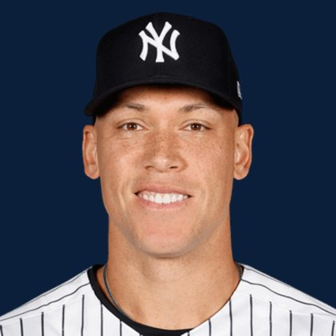

BASE KEEP
The Keep · The Diamond · The Farm
Player File · OF NYY

Aaron Judge
#99 · OF · New York Yankees · age 34 · B/T RR · 6' 7" / 282 lbs · MLB debut 2016 · Linden, USA
Keep avg8.35
# Boards23
BK Value9,111
Spread2-26
Hitting
| Year | G | AB | R | H | 2B | HR | RBI | SB | BB | SO | AVG | OBP | SLG | OPS |
|---|---|---|---|---|---|---|---|---|---|---|---|---|---|---|
| 2026 | 59 | 214 | 43 | 53 | 10 | 17 | 38 | 5 | 42 | 72 | .248 | .375 | .533 | .908 |
| 2025 | 152 | 541 | 137 | 179 | 30 | 53 | 114 | 12 | 124 | 160 | .331 | .457 | .688 | 1.145 |
The Keep#6BK 9,111
The Lineup#5BK 9,409
The Diamond#5BK 9,409
The 2026 line
Keep #6 · avg 8.35 · 23 boards · .248 / 17 HR / 5 SB / .908 OPS
Baseball Savant
Starcast · spray · pitch
Percentile ranks (Starcast) plus the official Savant spray chart for bats and pitch chart for arms. Open the full Baseball Savant page.
Batter · 2025
xwOBA
100
xBA
99
xSLG
100
xISO
100
xOBP
100
Barrels
100
Barrel %
100
EV
100
Max EV
99
Hard Hit %
99
K %
36
BB %
100
Whiff %
2
Chase %
84
Speed
42
Arm
85
OAA
86
Bat Speed
97
Squared Up
28
Swing Len
98
Hits spray chart
Minus
- Age 34 - dynasty tax.
Board graph
Spread 2-26 · 23 sources
Every Board
Spread 2-26 · 23 sources
| Source | Rank |
|---|---|
| TDG Points | 2 |
| ESPN | 2 |
| NFBC ADP | 2 |
| Mastersball | 2 |
| Yahoo Fantasy | 2 |
| ATC ROS | 2 |
| RotoWire | 4 |
| FanGraphs The Board | 4 |
| Dynasty League Baseball | 5 |
| Fantasy Baseballers | 6 |
| Four-Seam Fantasy | 6 |
| CBS Sports | 7 |
| Ottoneu | 7 |
| Baseball Prospectus | 9 |
| The Athletic | 9 |
| The Dynasty Dugout | 9 |
| Baseball America | 9 |
| MLB Pipeline mix | 9 |
| FantasyPros Dynasty ECR | 13 |
| Pitcher List | 13 |
| RotoGraphs Model | 18 |
| Razzball | 26 |
| Enos Slaughter | 26 |
BK News
- Yankees Mailbag: How will Trent Grisham, Spencer Jones be used when Aaron Judge returns?
- Aaron Judge’s MLB Return Remains Uncertain as Doctor Shares Latest Injury Update, Reveals Yankees Manager
- The most important players for contending MLB teams in September: Aaron Judge, Kyle Teel, Joe Musgrove, more
All players · The Keep · The Farm · The Diamond · BK News · The Lineup · Pitchers · Calculator